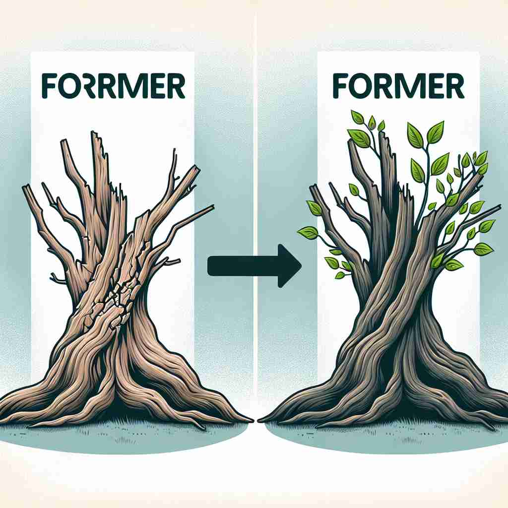

💬 He is a former student of this school.

💬 The former president gave a speech at the ceremony.

💬 The tree is showing its former state before it became green.
💬 The meeting was set for a former date in the calendar.
🔈 ['fɔːmə]
🗝️ adj. coming before in time or order
🖼️ 在一个充满历史气息的博物馆中，一位导游带着游客们参观。他指着一个古老的展品说：'这展品属于古代文明时期，而旁边这个是现代的作品。前者与后者之间展示了时间和顺序的演变。'
🔍 记忆'former'时，想象一条时间线或者一个队列。'former'总是指向更早或更前面的事物。无论是谈论过去的职位、早先提到的选项，还是以前的状态，'former'都在暗示一种'在先'的概念。这个核心意义贯穿了它的所有用法，帮助你更容易理解和记忆这个词的多重含义。
💬 He is a former student of this school.
💬 The former president gave a speech at the ceremony.
💬 The tree is showing its former state before it became green.
💬 The meeting was set for a former date in the calendar.
🌳 由词根 "form"（形状、形式）加后缀 "-er" 组成，表示 "之前的，前任的"，有从某种形式或状态中脱离的含义。
💡 记忆 "former" 可以联想到 "before"，强调在现在的状态之前的某个时间或角色。
🗝️ adj. of or relating to an earlier time
🖼️ 在一个悠闲的下午，一位年长的女士坐在阳光下翻看旧照片。她微笑着指着一张泛黄的照片说：'这是我年轻时的样子。那段时光对于我来说是不同寻常的。'
💬 He still maintains contact with his former colleagues.
❓ 延伸自核心含义中的"时间先后"概念
🗝️ n. the first of two things or people mentioned
🖼️ 在一个激烈的辩论赛中，主持人提出了两个观点：'有些人认为科技利大于弊，而另一些人则持相反意见。前者支持者认为科技带来了巨大的便利。'
💬 Of the two options, I prefer the former.
❓ 基于核心含义中的"顺序"概念，特指两者中较早提到的那个
🗝️ adj. previous or past
🖼️ 在一堂历史课上，老师向学生们展示了一张旧地图。他说，'这张地图展示的是昔日的帝国疆域，随着时间的推移，这些版图发生了巨大的变化。'
💬 The building was restored to its former glory.
❓ 从核心含义的时间概念引申而来，指过去的状态